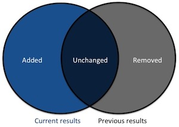

This document describes the SPARQL Event Processing
Architecture (SEPA). The SEPA consists of the following components:
the SPARQL Secure Event (SE) Protocol Service (also known as
SEPA Broker), the SPARQL
1.1 Secure Event (SE) Protocol and the SPARQL
1.1 Subscribe Language. The SEPA aims supporting the development of distributed, Web based and
context aware applications, in particular with reference to dynamic
contexts where detecting and reacting to events is critical. In such
contexts, the use of SPARQL queries [[sparql11-query]] MAY be
inefficient and MAY not guarantee to detect all the events because of
their asynchronous nature. Furthermore, the publish-subscribe
mechanism offered by the SEPA MAY support semantic driven
coordination and discovery. Eventually, the SEPA is built around a security
layer (e.g.,TLS [[!RFC5246]]) and it allows clients
authentication by means of JSON Web Tokens [[!RFC7519]].
Introduction
The proposed architecture implementing a content based
publish-subscribe mechanism over SPARQL is named SEPA (SPARQL Event
Processing Architecture). The core component of SEPA is the SPARQL SE
Protocol Service (also know as SEPA Broker). The SEPA Broker
implements the subscription mechanisms and algorithms. The SEPA is
framed within W3C Recommendations as shown in the following figure.

Fig. 1 - The SPARQL Event Processing Architecture (SEPA)
A SPARQL SE Protocol Service MUST implement the SPARQL
1.1 Secure Event (SE) Protocol that is proposed as an extension of
the SPARQL 1.1 Protocol [[sparql11-protocol]] and, as shown in Fig.
1, it wraps the SPARQL 1.1 Protocol [[sparql11-protocol]] to support
the subscribe primitives (i.e., subscribe, unsubscribe).
The SPARQL 1.1 SE protocol is built around a security layer
(e.g.,TLS [[!RFC5246]]) and it allows client authentication by
means of JSON Web Tokens [[!RFC7519]]. The SEPA Broker is built on
top of a SPARQL Protocol Service [[sparql11-protocol]].
The definition of the SPARQL
1.1 Secure Event (SE) Protocol and the SPARQL
1.1 Subscribe Language are out of the scope of this document.
Document conventions
When this document uses the words MUST, MUST NOT, SHOULD, SHOULD NOT,
MAY and RECOMMENDED, and the words appear as emphasized text, they
must be interpreted as described in RFC 2119 [[!RFC2119]].
Terminology
SEPA
SPARQL Event
Processing Architecture
SEPA Broker
The server component of the SEPA. It implements the
publish-subscribe mechanisms and algorithms. Clients interact with a
SEPA Broker with the SPARQL
1.1 SE Protocol
SPARQL 1.1 Subscribe Language
The subscription
language introduced by the SEPA
SPARQL 1.1 SE Protocol
The protocol
implemented by a SEPA Broker
SPARQL 1.1 Update Language
As defined by [[sparql11-update]]
SPARQL 1.1 Query Language
As defined by [[sparql11-query]]
The content-based subscription mechanism
The SEPA Broker implements a content based publish-subscribe
mechanism where the content of events is expressed using the SPARQL
1.1 Query Language [[sparql11-query]]. A SPARQL subscription acts as
a persistent query: on every SPARQL update
[[sparql11-update]], the query is evaluated and the results returned.
Instead of returning all the results, the SEPA Broker returns only
changes in the results (i.e., added and removed bindings
results). This allows saving network traffic (e.g., a relevant
aspect in low rates network typical of Web of Things systems) and
reducing processing cost on the client side (i.e., no need to compare
previous results with the current ones to understand what is
changed).
Considering the previous results as the query results before
the update and the current results as the query results after the
update, the content of a notification includes the added and removed
results as shown in the following figure:

Fig. 2 - The content of notifications: added and removed
results
The publish-subscribe mechanism implemented by a SEPA Broker
acts as follows:
- On receiving a subscribe request:
- It registers the subscription and returns to the
subscriber the subscription URI (named SPUID, Subscription
Processing Unit ID)
- It performs the SPARQL 1.1 Query [[sparql11-query]]
specified in the subscription request and notifies the subscriber
of the results (if any)
- On receiving an update request:
- It checks all the active subscriptions for results to be
notified (added, removed or both)
- It sends notifications (if any) to the subscribers